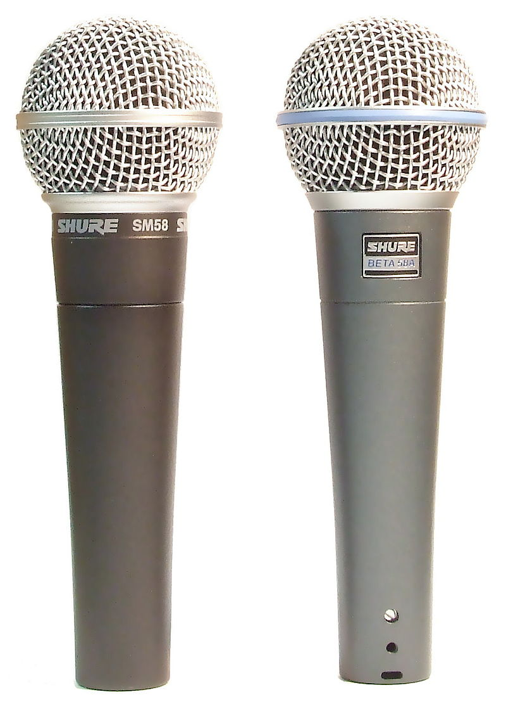

Micrófonos
SM58
El Shure SM58 es un micrófono profesional del tipo cardioide, comúnmente usado para las voces en vivo. Ha ganado reputación entre los músicos gracias a su robusta construcción y rendimiento técnico, y está considerado el estántard para la amplificación de voces en vivo.1 Lanzado en 1966, el SM58 se mantiene como uno de los micrófonos más vendidos en el mundo. Su nombre SM son las siglas de Studio Microphone (Micrófono de estudio).2 Como todos los micrófonos direccionales, el SM58 está sujeto al "Efecto proximidad", un incremento en el rango de frecuencias media-graves cuando se utiliza cerca de la fuente. El patrón cardioide reduce la captación de sonidos provienentes de los laterales y de la parte trasera, ayudando a evitar el feedback en el escenario. Este micrófono utiliza salida de audio balanceada XLR (Cannon) de tres pines. Pueden funcionar con cables (con o sin interruptor on/off) aunque existen versiones inalámbricas. El micrófono tiene una respuesta en frecuencia que se extiende desde los 50 Hertz (Hz) hasta los 15 Kilohercios (kHz).3 Si bien el aspecto y las aplicaciones previstas son similares, el "Shure Beta 58" y el "Shure Beta 58A" tienen poco en común con los SM58. La serie Beta usa una diferente cápsula y transformador que la serie SM. El Beta 58A tiene una muy extensa respuesta de frecuencia y es super cardioide, mejorando el rechazo de sonidos provenientes de los costados.4
